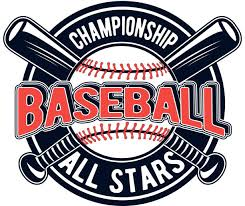

Purpose
The purpose of my website is to share my passion for baseball by providing an overview of the sport’s history, basic rules, and positions. It will be an easy-to-understand resource for people who are new to the game and want to learn the fundamentals.
Audience
The intended audience is kids, teens, and anyone new to baseball who wants a beginner-friendly introduction to the sport.
Logo
Color Scheme
- Primary: #002D62 (Navy Blue)
- Secondary: #FFFFFF (White)
- Accent: #FF0000 (Baseball Red)
- Background: #F5F5F5 (Light Gray)
Typography
Headings Font: Bebas Neue
Body Font: Open Sans
Navigation
Site Map
- Home
- Rules and Basics
- Player Positions
Content
About Baseball
Baseball has long been considered America’s pastime. With roots tracing back to the 19th century, it has evolved into a global sport with a passionate fan base. The game’s combination of strategy, skill, and teamwork makes it exciting for all ages. This page introduces visitors to the rich history of baseball and why it continues to thrive today.
Visitors can expect to learn the cultural significance of baseball, how the sport has changed over time, and what makes it special to millions of fans around the world. We’ll include beginner-friendly language and easy-to-follow explanations.


Rules and Basics
This page explains how the game is played: how teams score runs, how innings work, the number of players on each side, and the main objectives. It covers basic terminology such as strikes, balls, outs, hits, and runs.
For newcomers, this section provides a clear understanding of what’s happening on the field so they can follow along whether they’re watching a live game or joining their first practice. We’ll also cover common equipment used and how a typical game flows from start to finish.

Player Positions
This section helps users understand the roles of the nine fielding positions: pitcher, catcher, infielders, and outfielders. It describes what each player does, where they stand on the field, and why their role matters.
Whether you’re curious about how a pitcher throws a fastball or what a center fielder’s job is, this page provides position-by-position insight. Perfect for anyone looking to join a team or understand the strategy behind defense.

Wireframes
Wireframes will be added in future assignments. Each page will have a layout consistent with the site’s branding and navigation style.